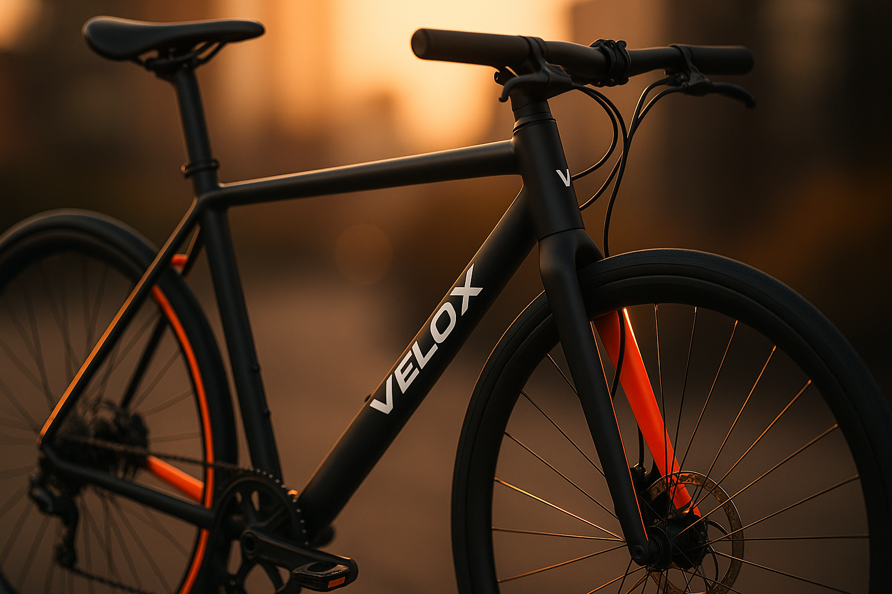
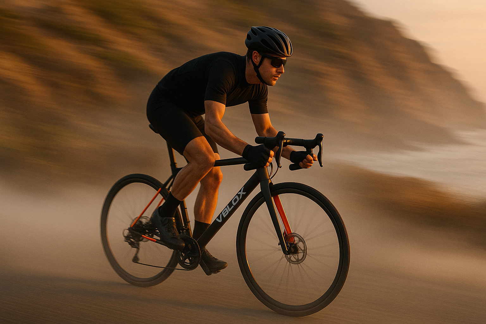
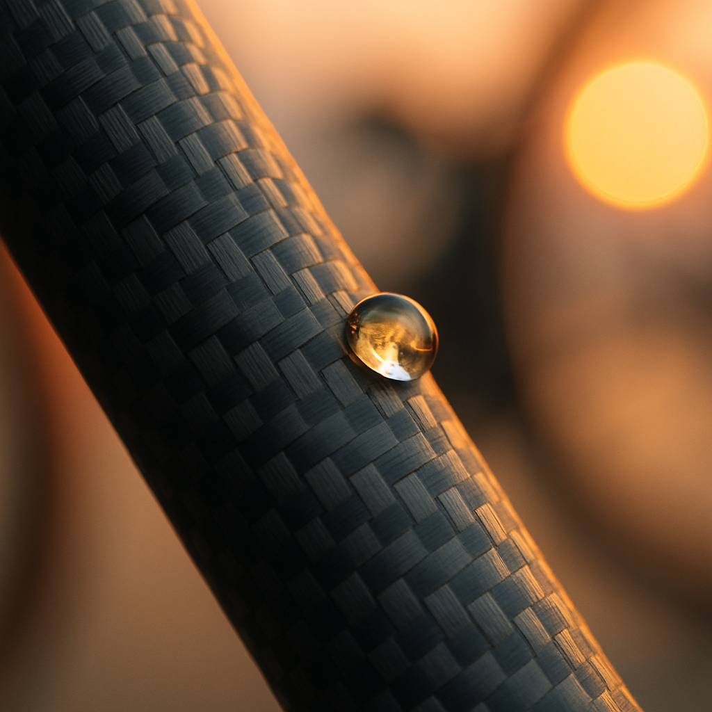
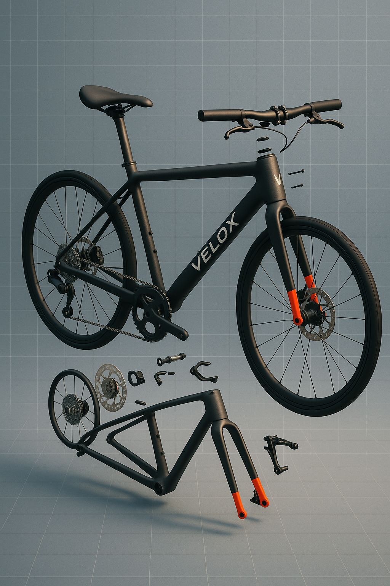
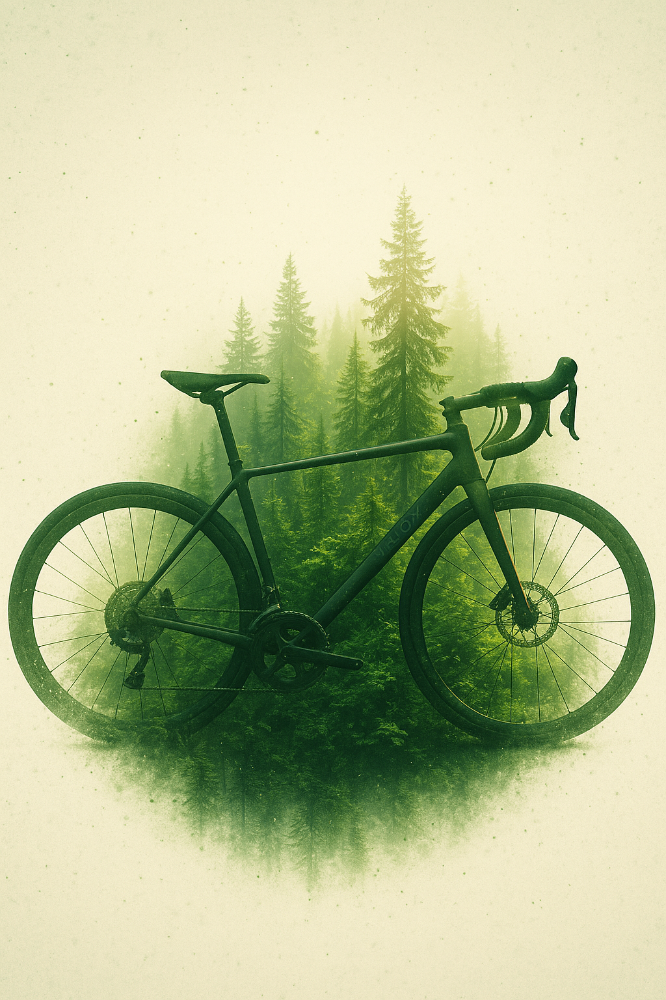
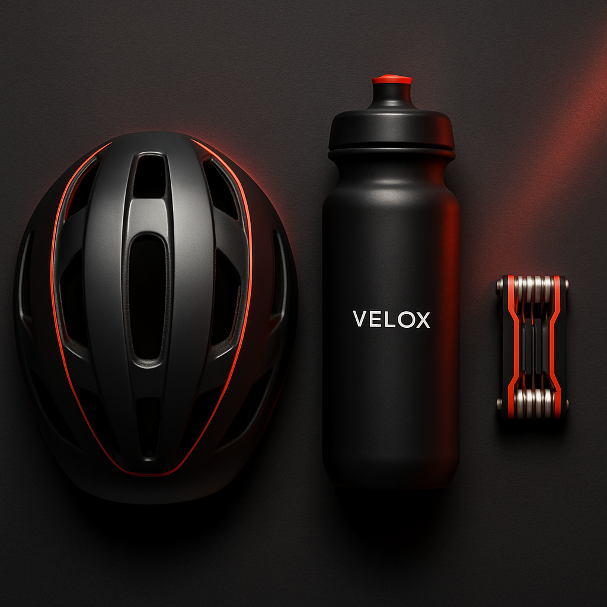
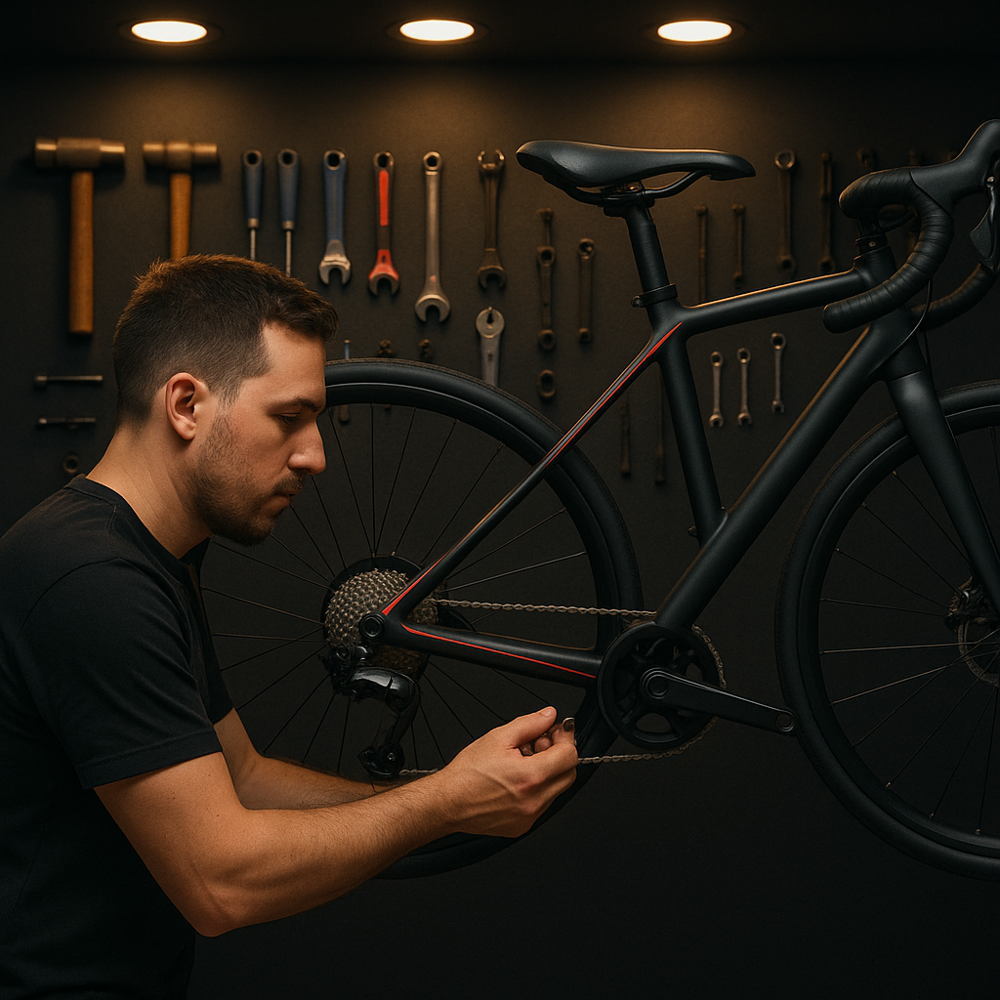

Hybrid Creative Workflows
Integração de ferramentas de geração de texto, imagem e vídeo para criar campanhas publicitárias e conteúdos de marketing de alta qualidade com eficiência sem precedentes.
Descrição Geral
O Hybrid Creative Workflows é uma solução inovadora que integra ferramentas de geração de texto, imagem e vídeo baseadas em IA para criar campanhas publicitárias e conteúdos de marketing de alta qualidade com eficiência sem precedentes.
Esta solução combina a criatividade humana com a potência da inteligência artificial, permitindo que equipes de marketing e agências de publicidade desenvolvam conteúdos consistentes e personalizados em múltiplos formatos e canais, reduzindo drasticamente o tempo e os recursos necessários.
Ao orquestrar o fluxo de trabalho entre diferentes ferramentas de IA e profissionais criativos, o sistema maximiza as forças de cada um, resultando em conteúdos de marketing mais eficazes, personalizados e com maior retorno sobre o investimento.


Funcionalidades Principais
Nossa solução Hybrid Creative Workflows oferece um conjunto abrangente de funcionalidades para transformar o processo criativo de marketing.
Geração Integrada de Conteúdo
Criação coordenada de textos, imagens e vídeos a partir de um briefing único, garantindo consistência visual e de mensagem em todos os formatos e canais de comunicação.
Orquestração de Fluxos de Trabalho
Sistema inteligente que coordena as tarefas entre IA e profissionais criativos, definindo automaticamente quais etapas devem ser automatizadas e quais requerem intervenção humana.
Adaptação de Estilo e Tom
Ferramentas que permitem ajustar o estilo visual e o tom de comunicação dos conteúdos gerados para alinhar-se perfeitamente à identidade da marca e ao público-alvo específico.
Análise de Desempenho Integrada
Monitoramento do desempenho dos conteúdos gerados, com feedback automático para os sistemas de IA, permitindo aprimoramento contínuo e otimização dos resultados.

Elementos Inovadores
Nossa solução Hybrid Creative Workflows incorpora tecnologias de ponta e abordagens revolucionárias para a criação de conteúdo de marketing.
Inteligência Colaborativa
Sistema que combina múltiplos modelos de IA especialistas em diferentes aspectos da criação (texto, imagem, vídeo, áudio), coordenando-os para trabalhar em conjunto com profissionais humanos de forma sinérgica.
Preservação da Identidade da Marca
Algoritmos que aprendem e preservam a identidade visual e o tom de voz específicos de cada marca, garantindo que todo conteúdo gerado mantenha consistência com o DNA da empresa.
Adaptação Contínua de Campanhas
Sistema que permite ajustes em tempo real nas campanhas com base em dados de desempenho, adaptando mensagens, visuais e estratégias para maximizar o engajamento e as conversões.
Valor Agregado
Nossa solução Hybrid Creative Workflows oferece benefícios significativos para equipes de marketing e agências.
Aceleração do Time-to-Market
Reduz em até 70% o tempo necessário para criar campanhas completas em múltiplos formatos e canais, permitindo resposta rápida a oportunidades de mercado e tendências emergentes.
Otimização de Recursos
Diminui significativamente os custos de produção de conteúdo ao automatizar tarefas repetitivas e técnicas, permitindo que equipes criativas foquem em estratégia e direção criativa de alto nível.
Maior Relevância e Personalização
Possibilita a criação de conteúdos altamente personalizados para diferentes segmentos de público, aumentando a relevância das mensagens e, consequentemente, as taxas de engajamento e conversão.
Escalabilidade sem Precedentes
Permite escalar a produção de conteúdo sem comprometer a qualidade ou a consistência, viabilizando estratégias de marketing mais ambiciosas e abrangentes com os mesmos recursos.
Galeria do Projeto
Visualize exemplos de nossa solução Hybrid Creative Workflows em ação.




Projetos Relacionados
Conheça outros projetos inovadores da DIGISOL que podem lhe interessar.

Interessado no Hybrid Creative Workflows?
Entre em contacto connosco para saber mais sobre como podemos revolucionar os seus processos de criação de conteúdo
Fale Connosco